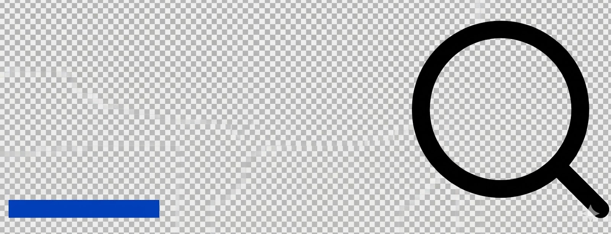

HTML
CSS
JavaScript
Web APIs
All
Learn
Tools
About
Blog

개발자를 위한 웹 기술
>
HTML: Hypertext Markup Language
>
HTML 참고서
>
HTML 요소 참고서
Filter
HTML: Hypertext Markup Language
> 안내서:
How to
Define terms with HTML
데이터 속성 사용하기
교차 출처 이미지와 캔버스 허용하기
Add a hitmap on top of an image
Tips for Authoring Fast-loading HTML Pages
JavaScript 추가하기
참고서:
> 요소
> 속성:
> 전역 속성
> Attributes by element
> Attributes values
This page was translated from English by the community.
Learn more and join the MDN Web Docs community.
View in English
Always switch to English
HTML 요소 참고서
이 페이지는 태그를 사용해 만들 수 있는 모든 HTML 요소의 목록을 제공합니다. 필요로 하는 요소를 쉽게 찾을 수 있도록 기능별로 분류했으며, 각각의 요소 참조 페이지 사이드바에서는 사전 순으로 정렬된 목록도 확인할 수 있습니다.
 Learn
Learn
 Filter
Filter